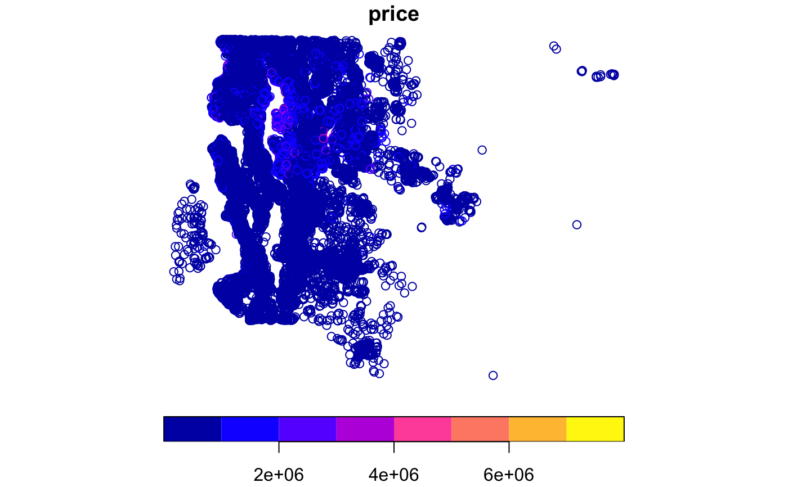

Home sales prices and characteristics for Seattle and King County, WA (May 2014 - 2015). Use list2env(kchomesale, .GlobalEnv) to unlist in working environment. The data consist of a list of two objects:
kchomesales_points A spatial points object of class sf Dataframe.
kc_zones A shapefile object of class sf Dataframe.
kchomesale
kchomesales_points includes homesales points with 21,613 rows, 21 variables, and a geometry column.
ID code
date sold
sale price
number of bedrooms
number of bathrooms
size of living area in square feet
size of the lot in square feet
number of floors
‘1’ if the property has a waterfront, ‘0’ if not
An index from 0 to 4 of how good the view of the property was
condition of the house, ranked from 1 to 5
Classification by construction quality which refers to the types of materials used and the quality of workmanship. Buildings of better quality (higher grade) cost more to build per unit of measure and command higher value. Additional details in: https://info.kingcounty.gov/assessor/esales/Glossary.aspx?type=r
square feet above ground
square feet below ground
year built
year renovated. ‘0’ if never renovated
5 digit zip code
latitude
longitude
average size of interior housing living space for the closest 15 houses, in square feet
average size of land lost for the closest 15 houses, in square feet
Polygon ID
ZIP code as int
ZIP code as chr
County code
Polygon length in meters
Polygon area in meters
kc_zones includes polygons of zones for King County with 85 rows, 6 variables and a geometry column).
ID code
Zip code
County code
Zip code type: standard or PO box
Polygon length
Polygon area
King County Home sales obtained from https://www.kaggle.com/harlfoxem/housesalesprediction/discussion and King county polygons are retrieved from https://gis-kingcounty.opendata.arcgis.com/datasets/zipcodes-for-king-county-and-surrounding-area-shorelines-zipcode-shore-area
List of two Sf objects, unprojected. EPSG 4326: WGS84.
## Unlist in Global environment library(geodaData) data(kchomesale) list2env(kchomesale, environment())#> <environment: 0x7fe3ec72d358>ls()#> [1] "kc_zones" "kchomesales_points"## Plot first listed dataset (kchomesales_points): if (requireNamespace("sf", quietly = TRUE)) { library(sf) data(kchomesale) plot(kchomesale[[1]]["price"]) }